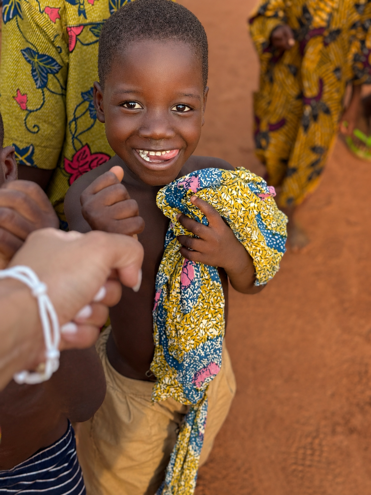

Powering progress through community grants.
Grants for Good supports nonprofits in the United States creating measurable impact in education, health, and clean water.
Contribute Apply / PartnerGive Together, Multiply the Impact
What if your $50 became $5,000 in impact? That’s the power of giving together.
The Grants for Good Fund pools donations from communities of givers like you and awards an annual grant to a vetted, community-based nonprofit doing real work in education, health, or clean water in the United States of America.
Here’s what your gift provides:
- $25adds your voice to the fund
- $50puts a qualified organization one step closer to receiving life-changing funding
- $100multiplies — pooled with donors like you and awarded where the need is greatest
- $500+you become a named Fund Champion
- $1,000you become part of its story — Grant Sponsor recognition included
Every dollar is pooled, reviewed by our panel, and awarded to an organization ready to deliver real results on the ground.
You give once a month. A nonprofit gets funded for a year! That’s the power of recurring giving, and it starts with you.
Prefer to Zelle? Send to info@unitedinone.org. Note “Grants for Good” in the memo.

Small grants can unlock big community change.
We believe that local leaders and organizations are the most powerful agents of change. The Grants for Good Fund is how we put that belief into action.
Through the Grants for Good Fund, United In One donates to nonprofits driving results in our core priorities — education, health, and clean water. We pool gifts into one annual grant, helping local organizations create lasting change where it’s needed most.
Support Grants for Good$50→$5K
the multiplying power of giving together
100%
of the fund pooled and awarded to partners
3
focus areas: education, health & clean water
A simple process for meaningful impact.
You Give
Donors contribute throughout the year into one shared fund dedicated to community impact.
We Grant
United In One reviews opportunities and awards grants to mission-aligned nonprofit partners.
Communities Grow
Selected nonprofits use the support to expand education, health, and water.

Education
We invest in programs that open doors to learning, skill-building, and personal growth for children and adults.
Examples:
- Literacy for All: Increases reading proficiency for K–8 students through evidence-based tutoring, family literacy workshops, and teacher training.
- College Access Bridge: Supports first-generation students with advising, test prep, financial aid navigation, and mentorship to boost college enrollment and persistence.
- Workforce Pathways Center: Provides industry-aligned training, certifications, and job placement services for adults seeking living-wage careers.
- STEM Equity Lab: Offers hands-on STEM programs, maker spaces, and robotics clubs to expand access and representation in science and technology.

Health
We support initiatives that improve physical and mental well-being, increase access to care, and promote healthy lifestyles.
Examples:
- Community Free Clinic: Provides no-cost primary and preventive care to uninsured residents to reduce avoidable ER visits and improve chronic disease management.
- Mental Health Outreach Network: Delivers counseling, crisis support, and peer-led groups to increase access to mental health care for youth and families.
- Mobile Health Collective: Operates mobile clinics offering vaccinations, screenings, and referrals in underserved neighborhoods to close care gaps.
- Healthy Food Alliance: Expands access to nutritious food through produce distributions, nutrition education, and partnerships with local farmers.

Clean Water
We fund projects that ensure communities have reliable access to safe, clean water — a fundamental human right.
Examples:
- Mobile Water Quality Van: Brings free, on-the-spot water testing and education to underserved neighborhoods, with same-day results, filter distribution, and referrals for remediation.
- Lead-Safe Homes Initiative: Tests household tap water for lead, replaces lead service lines and fixtures, and supports families with filters and education to ensure safe drinking water at home.
- Urban Hydration Network: Expands public hydration stations, bottle-fill units, and cooling hubs in transit corridors, parks, and schools to reduce plastic waste and heat-related risks.
- Safe Water for Shelters Network: Equips shelters, encampment outreach programs, and transitional housing with reliable water access — portable stations, bulk deliveries, refill hubs, and sanitation supplies — during outages or advisories.
Eligibility & Selection Criteria
We seek partners who are deeply committed to their communities and can demonstrate a clear vision for change.
FAQs
What We Do Not Fund
- Individuals or for-profit companies.
- Projects designed to pay off existing debt or cover past operating deficits.
- Partisan political activities or lobbying efforts.
- Religious activities that are not inclusive of the entire community.
Who is eligible to apply?
- Registered 501(c)(3) nonprofit organizations.
- Organizations serving communities with a measurable, data-driven approach to impact.
- Projects and organizations that are equity-centered, ensuring benefits reach underserved and marginalized populations.
How do you select the grantee?
Our review committee uses a clear rubric to evaluate applications, focusing on four key areas:
- Need: The urgency and importance of the problem being addressed.
- Feasibility: The clarity and practicality of the project plan, budget, and timeline.
- Impact: The potential for significant, measurable, and lasting positive change.
- Stewardship: The organization’s capacity, leadership, and financial health to manage the grant effectively.
How do I apply for the grant?
We use a straightforward, one-step process to make applying as simple as possible. Qualified applicants will submit a proposal with the following:
- Proposal Summary: A brief narrative describing the project, the community it serves, and the expected outcomes.
- Project Budget: A detailed budget outlining how the grant funds will be used.
- Project Timeline: A clear timeline with key activities and milestones.
- Measurement Plan: An explanation of how you will track progress and measure success.
- Organizational Information & References: Your organization’s most recent financial statements.
Are there expectations after the grant is received?
We believe in partnership and transparency. Our annual grantee will be asked to provide:
- A brief mid-year update on project progress.
- An end-of-year impact report detailing achievements, challenges, and key learnings.
- Stories and photos (with full consent from participants) that we can share with our community.
What is the typical grant size?
The grant size varies based on the total funds collected. The exact dollar amount is announced one month before applications open.
What is the grant cycle timeline?
We announce the total funds collected in December. The application and selection process takes place in January. The next grant cycle will begin in 2026.
Do you have geographic restrictions?
Yes, this program is exclusively for U.S.-based nonprofits. However, we support global initiatives through our other three projects.
Can an organization apply again if it wasn’t selected?
Yes. We encourage unsuccessful applicants to re-apply in a future cycle, especially if their project or proposal has been strengthened. Past grantees must wait three years before reapplying.
Do you consider multi-year funding?
Currently, the Grants for Good Fund is structured to award a single one-year grant annually.
Your generosity can fund lasting change.
Give once a month and a nonprofit gets funded for a year. Every dollar is pooled, reviewed by our panel, and awarded where the need is greatest — that is the power of giving together.
Contribute to the Fund Become a Partner